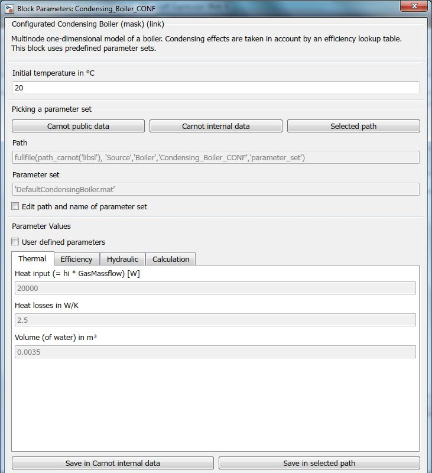

Condensing_Boiler
Condensing_Boiler Path: CARNOT/Source/Boiler
Condensing_Boiler
Path: CARNOT/Source/Boiler
Purpose
1 x N node model of a condensing boiler with a lookup table
fir the efficiency.
Description
The boiler model is a simple model which considers the
heat input into the combustion chamber of the
boiler.
The model
does not consider any
limitations from the process or combustion control (e.g. delay times, initial
burner control during start up).
On the water side
of the furnace, a multinode model is used to model the time dependent
conditions. The differential equation for the water temperature
characteristic of a node in the boiler is
(m*c/N)*dTNode/dt = UA/N*(Tamb-Tnode) + mdot*cf(Tin-Tnode)+Pact/N
the actual power is
Pact = eta_lookup_table(Tm, ctrl) * Pgas * ctrl
the electric power consumption is
Pelec = Pel_lookup_table(ctrl)
with the variables
|
symbol |
Used for |
Unit |
|
c |
heat capacity boiler |
J/(kg K) |
|
ctrl |
control signal in [0...1] |
- |
|
cf |
heat capacity of fluid |
J/(kg K) |
|
m |
mass of the boiler |
kg |
|
mdot |
Mass flow rate |
kg/s |
|
N |
Number of nodes |
- |
|
Pact |
Actual power of the boier |
W |
|
Pgas |
Heat input of the boiler (= net caloric value * gas massflow) |
W |
|
Tm |
Temperature
for efficiency table |
K |
|
t |
Time |
s |
|
Tamb |
Ambient temperature |
°C |
|
Tnode |
Fluid temperature of the node in the boiler |
°C |
|
Tin |
Temperature of fluid entering node |
°C |
|
UA |
heat loss coefficient to ambient |
W/K |
Parameters and Dialog Box
Choose the boiler parameter set in the mask from carnot public
data files, internal data files or any other selected path.
You may edit a parameter set and save it under a new name. Typically these new
parameter sets are stored in the carnot internal data path or your project path.

The parameters are saved as a structure in the folder "parameter_sets":

For details see chapter 2.2.1 Choosing parameter sets for configurated models
Characteristics
Direct Feedthrough Yes
Sample
time
Inherited
from driving block
States
corresponding
to the number of nodes
Vectorized
No